Vitória
Clube atual
11 jogos · 1 gols
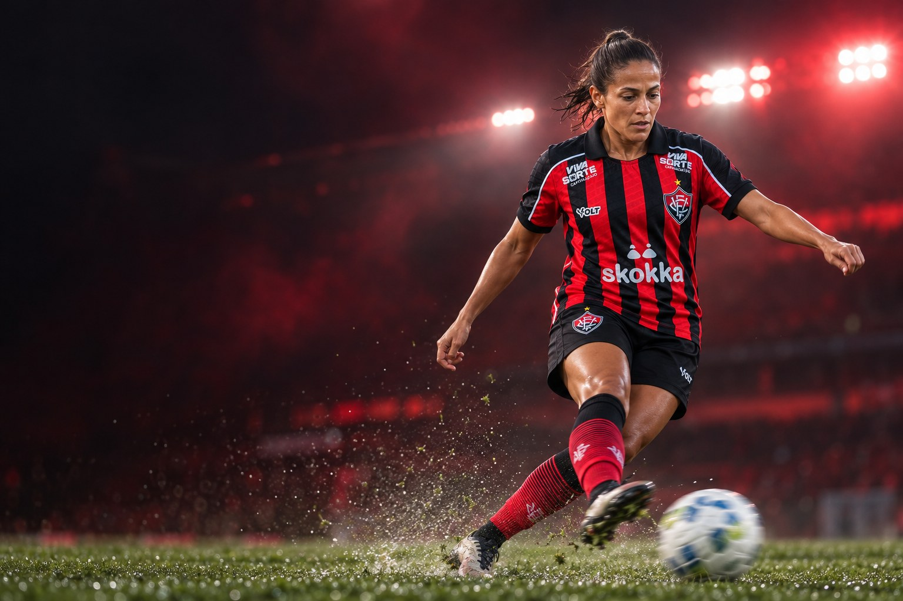
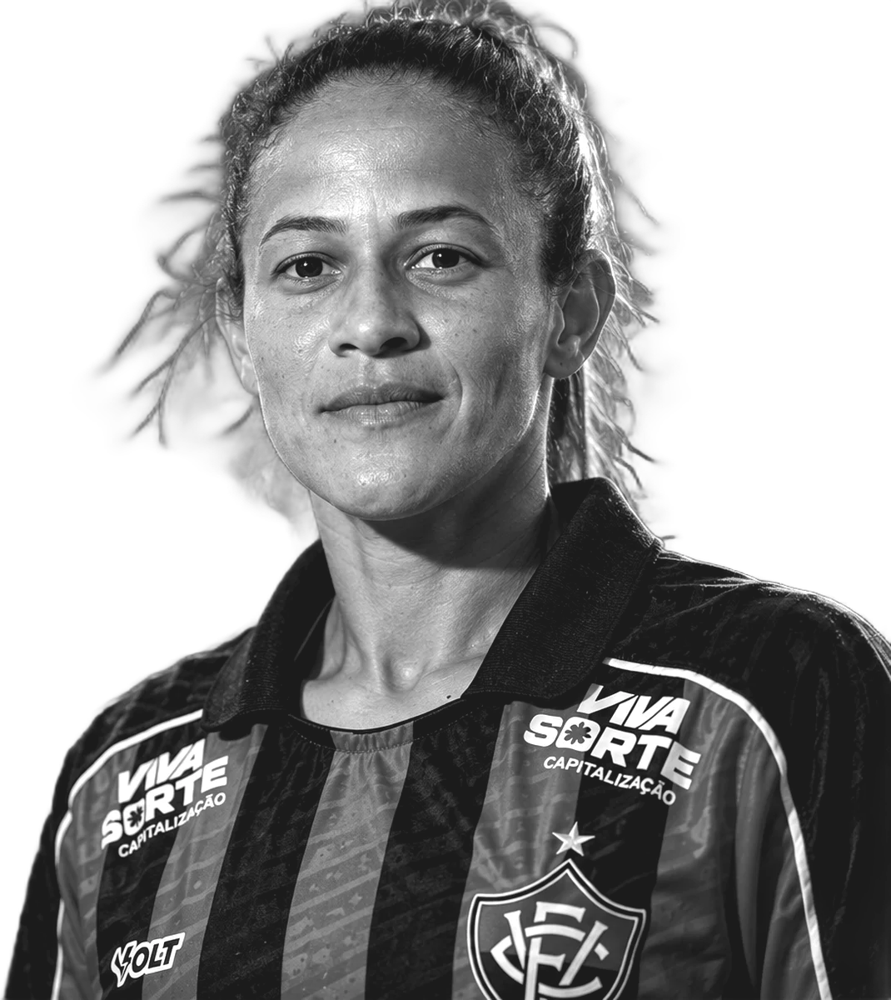
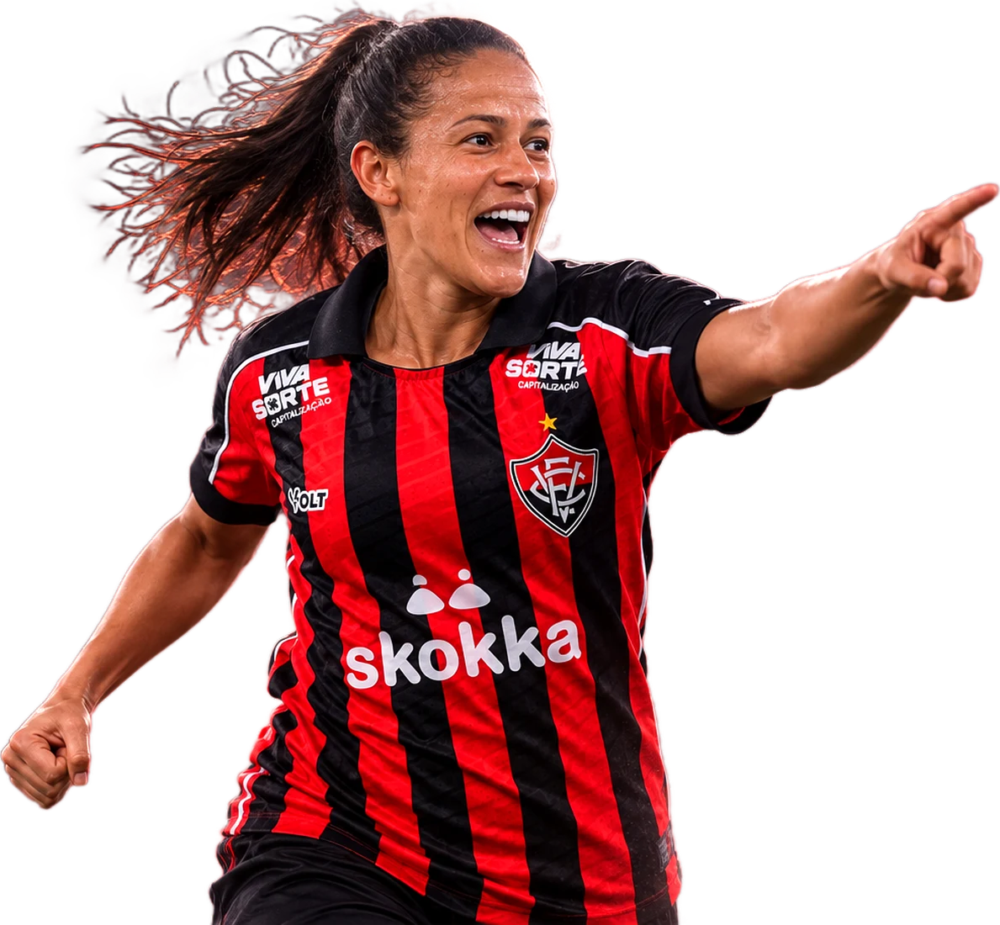
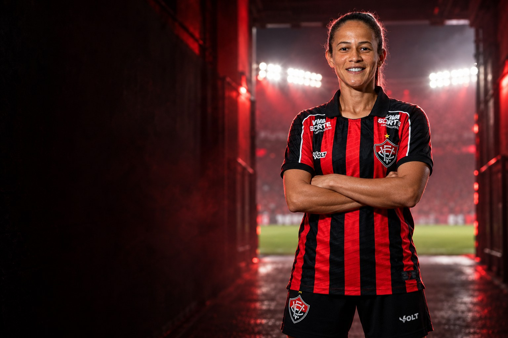
Sobre
Mariana Neiva Pires é futebolista profissional e atua como meia esquerda e lateral esquerdo. Clube atual: Vitória.
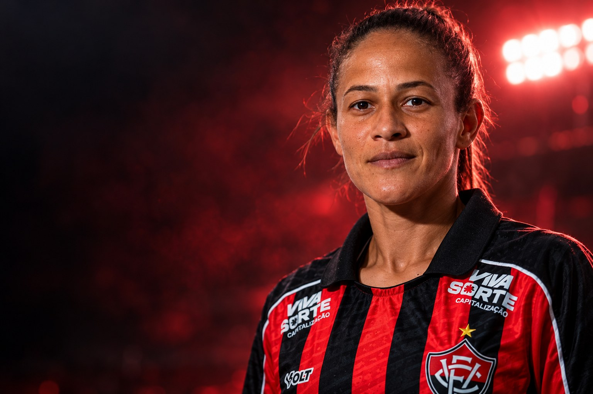
Perfil
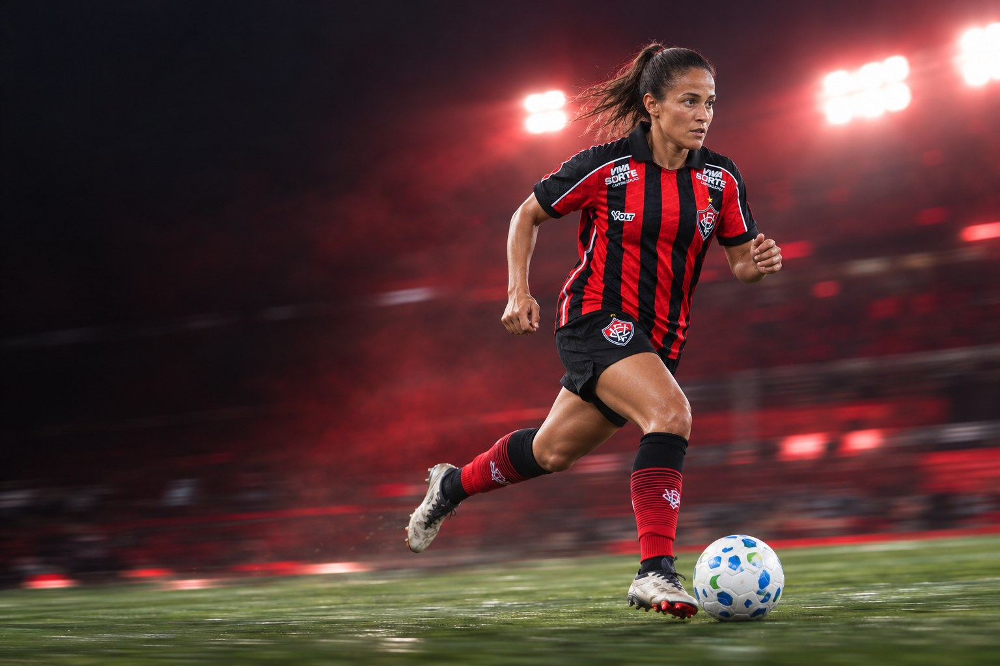
Carreira em números
Carreira
Clubes em destaque
11 jogos · 1 gols
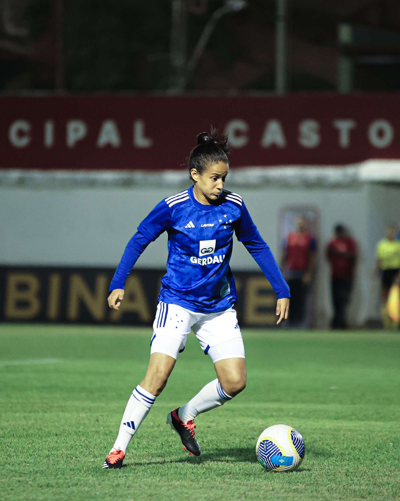

66 jogos · 9 gols
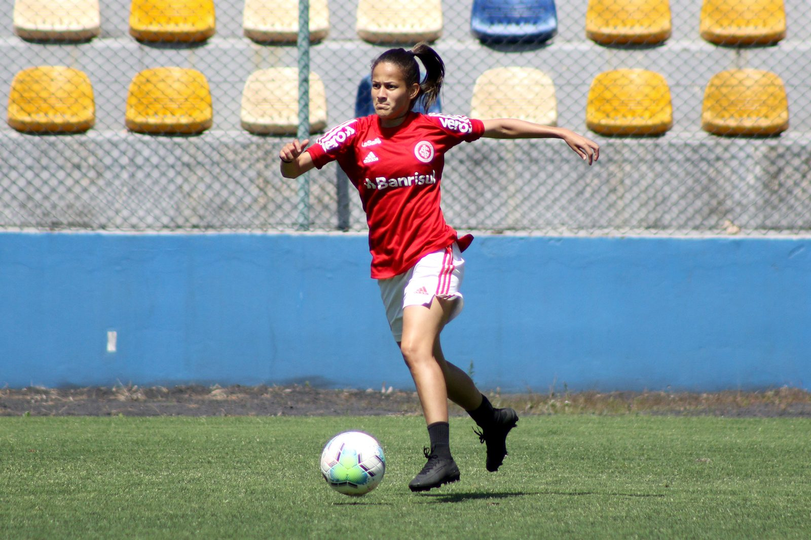

64 jogos · 17 gols
Conquistas
Galeria
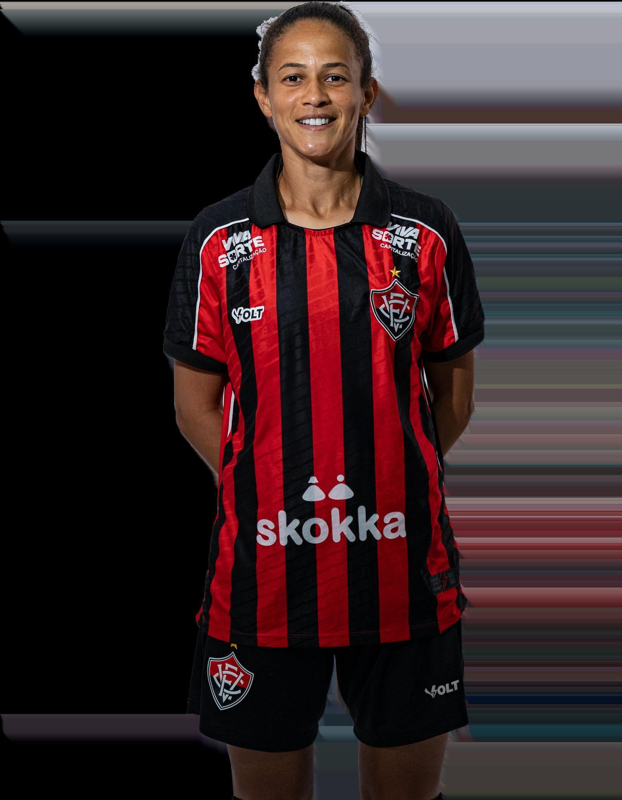
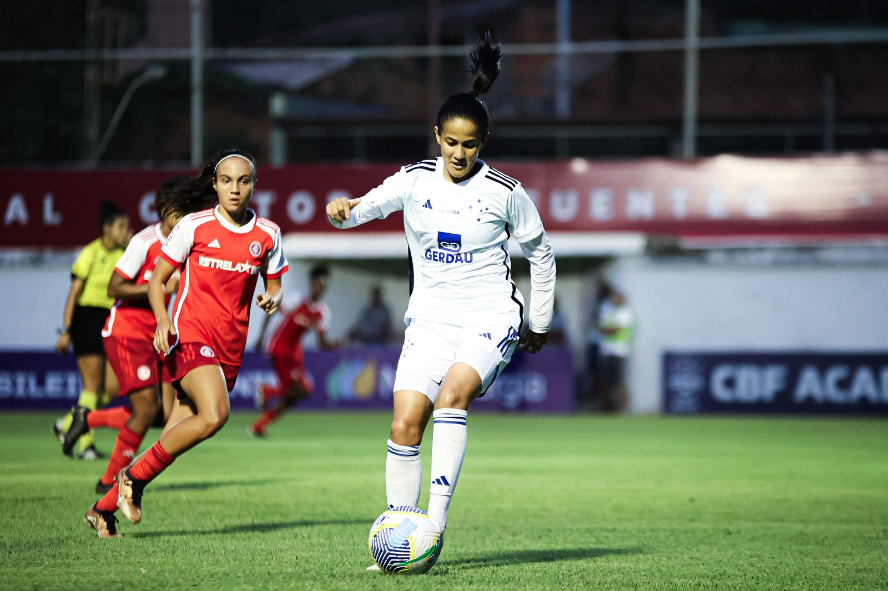
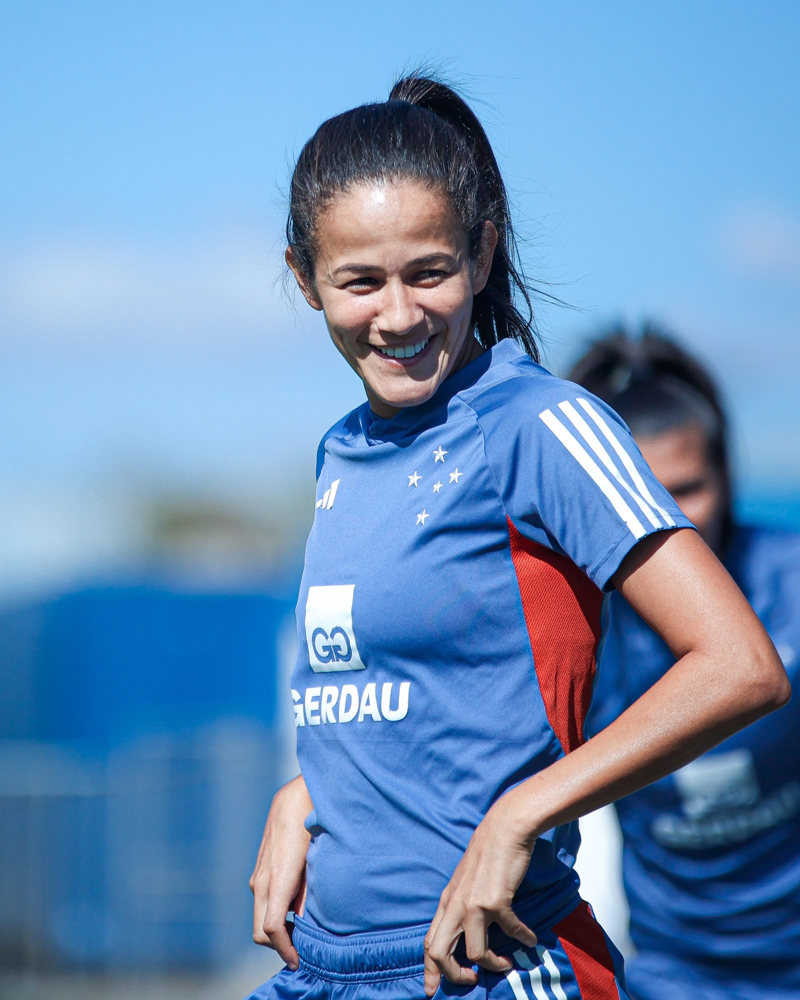
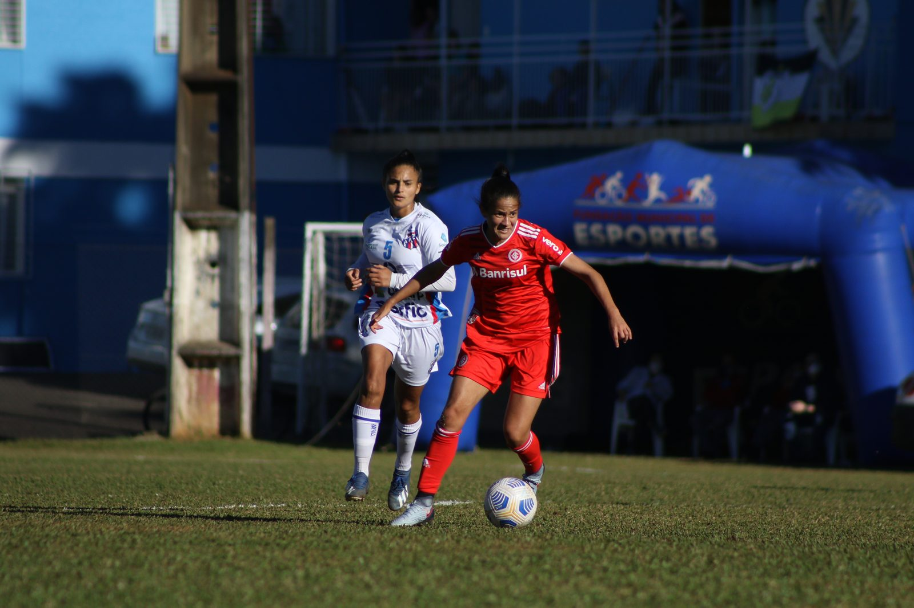
Currículo esportivo
| Temporada | Clube | País | Jogos | Gols | Assistências |
|---|---|---|---|---|---|
| 2026 | Vitória | 11 | 1 | 2 | |
| 2025 | 9 | 0 | 1 | ||
| 2024 | 17 | 2 | 0 | ||
| 2023 | 25 | 4 | 5 | ||
| 2022 | 24 | 3 | 4 | ||
| 2021 | 24 | 1 | 2 | ||
| 2020 | 13 | 1 | 1 | ||
| 2019 | 27 | 15 | 0 | ||
| 2018 | Tiradentes-CE | 4 | 4 | 0 | |
| 2018 | 3 | 0 | 0 | ||
| 2018 | 14 | 2 | 0 | ||
| 2017 | Iranduba | 20 | 5 | 0 | |
| 2016 | Iranduba | 19 | 13 | 0 | |
| 2015 | 12 | 3 | 0 | ||
| 2014 | 5 | 0 | 0 | ||
| 2013 | 2 | 2 | 0 | ||
| 2013 | XV de Piracicaba | 1 | 1 | 0 | |
| 2011 | – | – | – |
Jogos, gols e assistências conforme a base estatística Ogol. O clube atual segue o anúncio oficial do clube.
Na mídia
Contato profissional
Assuntos profissionais, comerciais e de carreira: fale pelo perfil oficial da atleta.
Mídia kit
International profile